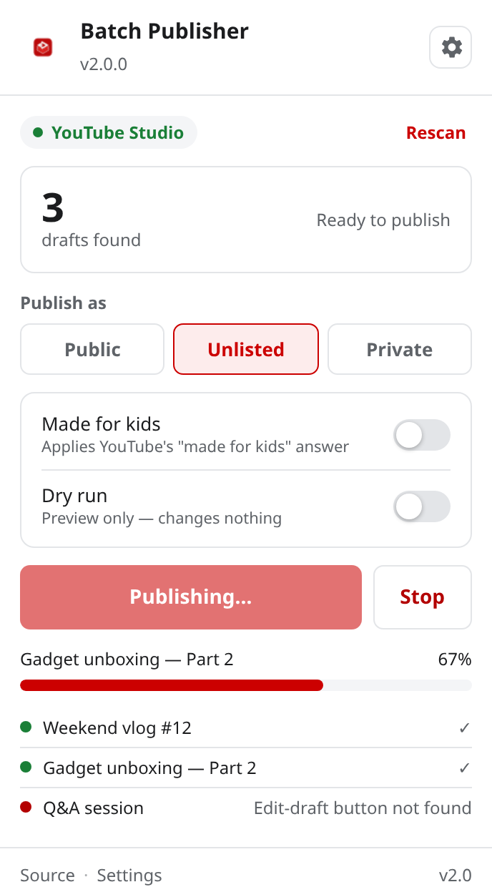

Publish every YouTube Studio draft in one click
Pick a visibility, press one button, and watch them all go out — with a live progress bar and a Stop button you can actually use.

The popup while a batch is running.
The problem
You have finished a batch of videos. They are sitting in YouTube Studio as drafts, waiting for you to open each one, click through the visibility step, answer the "made for kids" question, hit save, and dismiss the confirmation popup.
Then do it again. And again. Twenty uploads means twenty rounds of the same four clicks.
What this does
It runs that loop for you. Point it at your content page, choose a visibility, and press one button.
Batch publish
Publishes every draft visible on your Studio content page in a single run.
You choose the visibility
Public, Unlisted or Private — matched by the option's label, so the right one is always selected.
Made for kids, answered
Sets YouTube's "made for kids" answer automatically to whatever you configured.
Live progress
A progress bar and a per-video log, so you always know exactly where it is.
Stop any time
A real Stop button that halts the run cleanly between videos.
Dry run
Scans your drafts and reports what it would do, without changing anything.
Retries that work
A failed video is retried, reported and skipped — the rest of the batch keeps going.
Light & dark
Follows your system theme, or you can pin it to either one.
Stays on your machine
No accounts, no servers, no analytics. It talks to YouTube Studio and nothing else.
How it works
The extension is three small pieces that talk to each other.
-
The popup checks the page
It asks the background worker for the active tab and confirms it really is
studio.youtube.com— so it never fires on the wrong site. - The worker forwards the request It makes sure the content script is alive, injecting it on demand if the tab was already open when the extension was installed, then passes the job along.
- The content script publishes For each draft row it opens the editor, sets the "made for kids" answer, walks to the visibility step, selects the option whose label matches your choice, saves, and dismisses the share dialog.
- Progress streams back Every step is timeout-bounded and cancellable. Failures are retried and reported instead of being swallowed, and the popup updates as it goes.
YouTube Studio's markup is not a public API, so every selector lives in one file
(src/core/selectors.js) with ordered fallbacks, and options are matched by their
visible label rather than by position. If YouTube redesigns a page, that is the one file to
update.